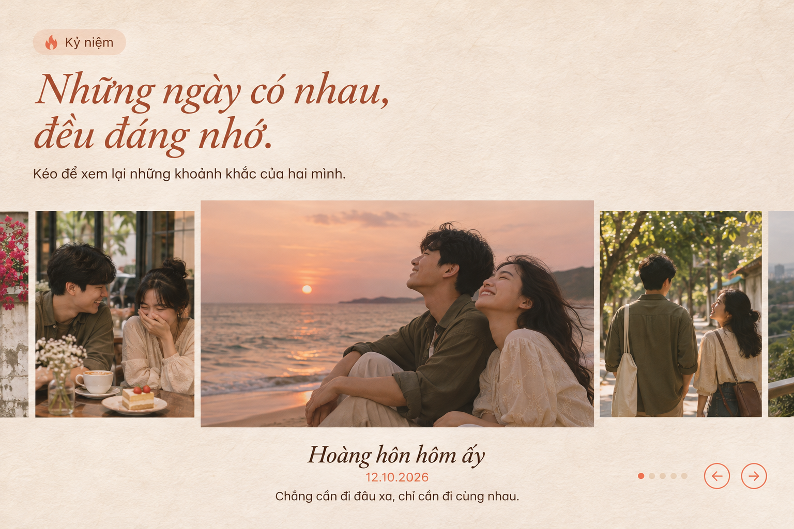
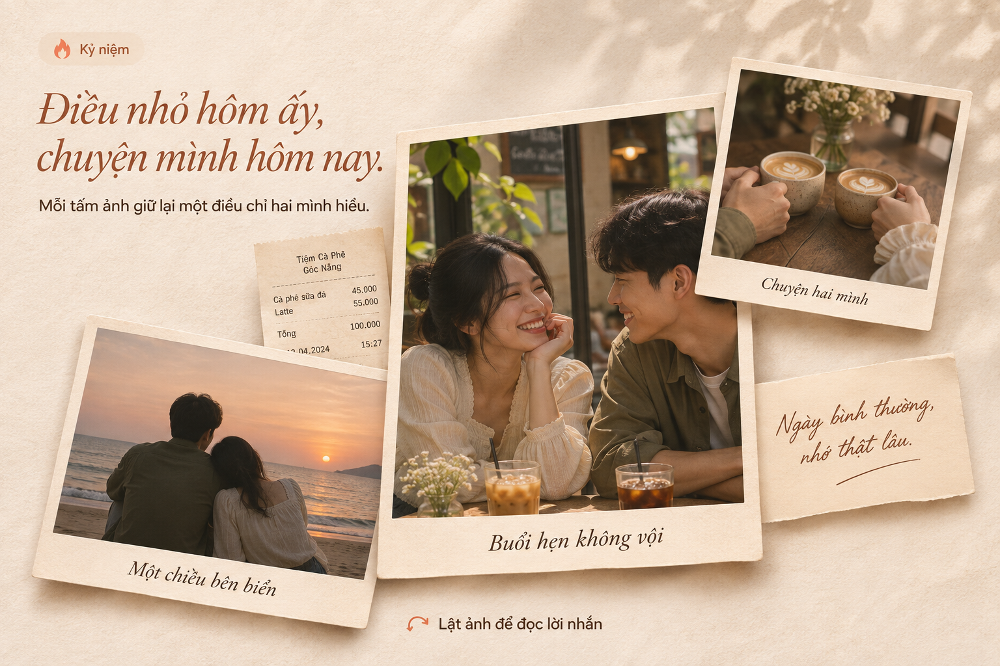
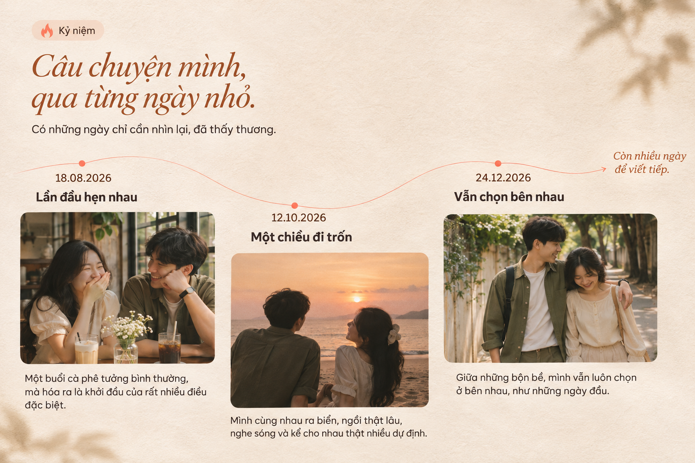
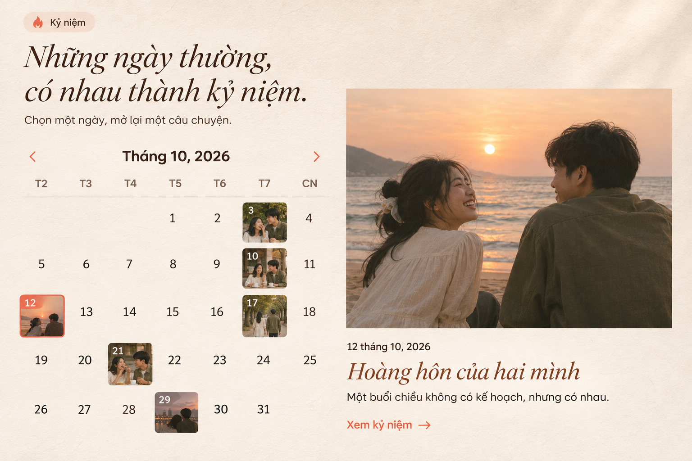

Cuộn phim của hai mình
Dải ảnh điện ảnh có thể kéo ngang; khoảnh khắc ở giữa được nhấn mạnh cùng ngày và lời kể.

Xem ảnh lớn — Cuộn phimĐề xuất cho phần Kỷ niệm trên landing page Flamee. Bấm ảnh để xem bản lớn.
Dải ảnh điện ảnh có thể kéo ngang; khoảnh khắc ở giữa được nhấn mạnh cùng ngày và lời kể.

Xem ảnh lớn — Cuộn phimẢnh, ghi chú và kỷ vật xếp lớp trên nền giấy; bấm để lật ảnh và đọc lời nhắn.

Xem ảnh lớn — Bàn ảnhẢnh và ngày tháng dẫn dắt câu chuyện theo từng dấu mốc; các khoảnh khắc hiện ra khi cuộn.

Xem ảnh lớn — Dòng thời gianLịch tháng có ảnh nhỏ trên từng ngày; chọn ngày để mở ảnh và câu chuyện bên cạnh.

Xem ảnh lớn — Lịch kỷ niệm